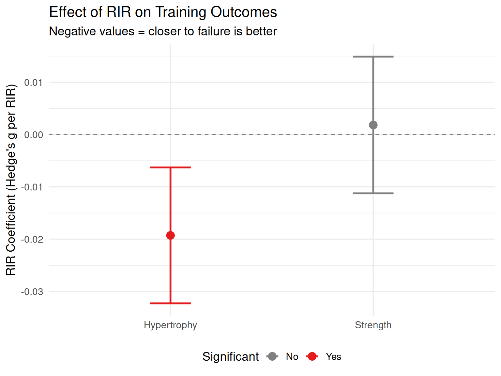

Training closer to failure does not produce significantly greater strength gains. You can stop 2-3 reps short and still get similar strength improvements.
Interpretation: Statistically significant and negative
What This Means for Muscle Building
Training closer to failure does produce greater muscle hypertrophy. Each RIR reduction (getting closer to failure) is associated with slightly more muscle growth.
Visualizing the Difference
Show code
# Create comparison datacomparison_df <-data.frame(Outcome =c("Strength", "Hypertrophy"),Estimate =c(str_rir_b, hyp_rir_b),SE =c(str_mod$se[rownames(str_mod$b) =="avg.rir"], hyp_mod$se[rownames(hyp_mod$b) =="avg.rir"]),Significant =c("No", "Yes"))comparison_df$Lower <- comparison_df$Estimate -1.96* comparison_df$SEcomparison_df$Upper <- comparison_df$Estimate +1.96* comparison_df$SEggplot(comparison_df, aes(x = Outcome, y = Estimate, color = Significant)) +geom_point(size =4) +geom_errorbar(aes(ymin = Lower, ymax = Upper), width =0.2, linewidth =1) +geom_hline(yintercept =0, linetype ="dashed", color = COLORS$gray) +scale_color_significance() +labs(x =NULL,y ="RIR Coefficient (Hedge's g per RIR)",title ="Effect of RIR on Training Outcomes",subtitle ="Negative values = closer to failure is better" )

Figure 1: RIR Effect on Strength vs Hypertrophy Outcomes
The figure shows:
Strength (gray): Confidence interval includes zero - no significant effect
Hypertrophy (red): Entirely below zero - significant negative effect